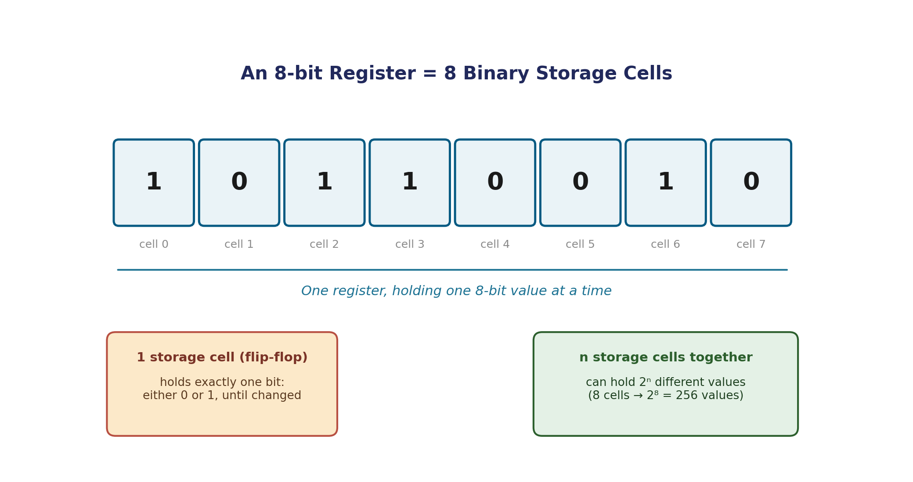

Every code and number system covered so far describes how to interpret a pattern of bits — but where do those bits actually live between the moment they're written and the moment they're read again? This short page covers the physical side: the storage cell that holds one bit, and the register that groups many of them together.
A binary storage cell is a circuit called a flip-flop — a device with exactly two stable electrical states. Whichever state it's currently sitting in is the bit it's storing: one state means 0, the other means 1. Crucially, a flip-flop holds its state — it doesn't need continuous input to keep remembering a 0 or a 1, unlike a plain wire, which only carries a signal while something is actively driving it.
A register is simply an ordered group of storage cells acting together. An 8-bit register is 8 flip-flops side by side, together holding one 8-bit value at any given moment — exactly the kind of value you've been converting between number systems on earlier pages.

A register of n cells can hold any one of 2ⁿ possible values at a time — the same counting principle behind every number system you've already seen. An 8-bit register holds 2⁸ = 256 possible values; a 32-bit register holds 2³² (over 4 billion) possible values.
Computers work by moving values between registers and combining them — copying a value from one register into another, or feeding two registers into a circuit that computes their sum. This movement is called a register transfer, and it's important enough to get its own dedicated topic (Register Transfer Language) later in this course. For now, the only thing to take away is the vocabulary: a register holds a value, and a transfer moves or copies that value somewhere else without necessarily destroying the original.
| Term | Meaning |
|---|---|
| Storage cell / flip-flop | Holds exactly one bit, indefinitely, without continuous input |
| Register | An ordered group of storage cells holding one value |
| n-bit register capacity | 2ⁿ possible values |
| Register transfer | Moving/copying a value from one register to another |